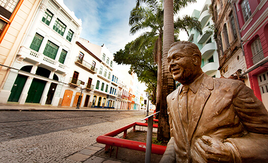

Em Recife:
Rua do Bom Jesus

A Rua do Bom Jesus foi considerada uma das ruas mais bonitas do mundo. Além disso, ela é uma das ruas mais antigas do Recife. Por lá você vai encontrar alguns dos prédios mais importantes, portanto descubra a história do Recife Antigo a fundo. Aos domingos, a Rua do Bom Jesus ganha uma feirinha típica com artesanato local, barraquinhas de comida, artesanato e música aos fins de tarde. A feirinha é bem familiar, as crianças aproveitam para brincar e os pais vão às compras ou relaxam num bar ou restaurante. Além disso, dá para fazer um lanche e experimentar algumas das comidas típicas de Pernambuco que são deliciosas. Vá até o Centro Cultural Judaico, que é a Sinagoga Kahal Zur Israel. A primeira sinagoga das américas é um dos pontos mais importantes da cidade. O local funciona como um museu onde é possível ver escavações arqueológicas, peças que foram encontradas no local e o micvê, uma banheira usada para rituais de purificação dos judeus. A entrada custa R$10, porém estudantes pagam metade do valor. Seguindo pela Rua do Bom Jesus, você poderá visitar a Embaixada de Pernambuco – Bonecos Gigantes de Olinda. No local há uma exposição dos bonecos gigantes usados durante o carnaval de Recife e Olinda. Lá também é possível conhecer mais sobre o carnaval e aprender um passos de frevo. A entrada custa R$15 por pessoa, mas crianças até 12 anos não pagam. Aproveite os diversos restaurantes do Recife que estão nessa região e experimente a culinária local. Com certeza o seu passeio vai ficar mais completo.
Praça do Arsenal no Recife Antigo


A Praça do Arsenal da Marinha, a segunda mais importante da região do Recife Antigo, abriga diversos casarios antigos e coloridos. A praça foi criada pelo famoso paisagista Roberto Burle Marx, por isso é composta de palmeiras imperiais e uma fonte
Tem o Museu a Céu Aberto que é uma muralha de pedras do Arco do Bom Jesus e parte do dique de contenção do mar, achado da época dos Holandeses. Lá você ainda vai ver a Torre Malakoff, que serviu como observatório astronômico no passado, mas hoje está aberta para exposições.
Em seguida, conheça o museu interativo Paço do Frevo que conta a história do frevo e de seus compositores, como Capiba, um dos maiores do estado. No Paço do Frevo é possível presenciar algumas oficinas e ensaios de música. Quando estivemos lá pela última vez, vimos o ensaio do Maestro Forró e seus músicos.